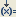

button next to
button next to  on the map service editor toolbar and select the map action that you want to perform.
on the map service editor toolbar and select the map action that you want to perform.Map Action | Description |
 Set a Value | Assigns a value to the selected variable in the Pipeline In or Pipeline Out stage of map service. For details, see
Assigning a Value to a Pipeline
Variable. On the Set a Value dialog box , select the variables to which you want to assign a value and set the values. |
 Drop a Variable Drop a Variable | Drops the selected variable from the Pipeline In or Pipeline Out stage of map service. For details, see
Dropping Variables from the Pipeline. On the Drop a Variable dialog box, select the variable which you want to drop from the pipeline. |
 Create a Link Create a Link | Creates a link between the variables defined in the map service. For details, see
Creating a Link Between Variables. On the Create a Link dialog box, select the source and target variables between which you want to create a link. |
 Create a ForEach Create a ForEach | Creates a ForEach mapping between array variables defined in the map service. For details, see
Creating a ForEach Mapping. On the Create a ForEach Mapping dialog box, select the source and target array variables between which you want to create a ForEach mapping. |
Inserts a service for use as a transformer in the map service. For details, see
Inserting a Transformer. Service could be a built in service, previously built flow service, or a map service. On the Select... dialog box, select the required service to be added as a transformer in the map service. |